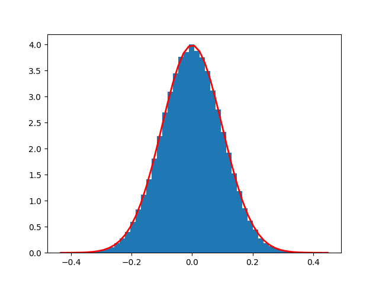
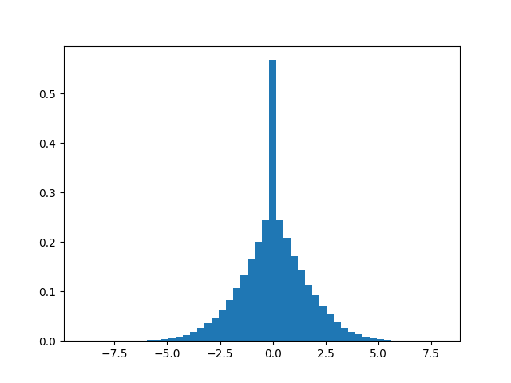
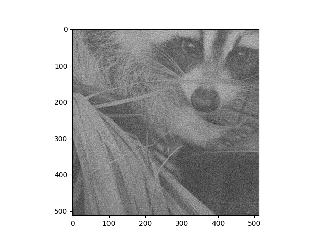
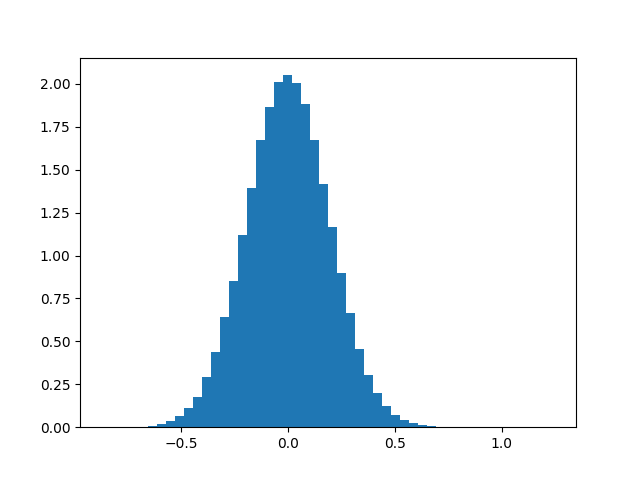
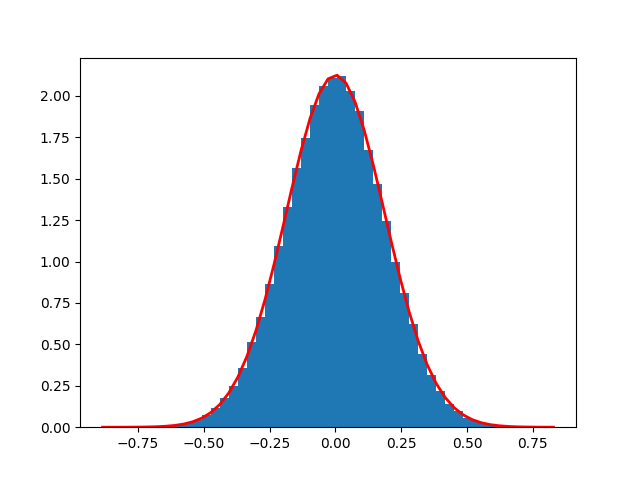

<!DOCTYPE html>
<html class="writer-html5" lang="en" >
<head>
  <meta charset="utf-8" />
  
  <meta name="viewport" content="width=device-width, initial-scale=1.0" />
  
  <title>07. White Noise Between Spaces &mdash; recon 0.0.1 documentation</title>
  

  
  <link rel="stylesheet" href="../_static/css/theme.css" type="text/css" />
  <link rel="stylesheet" href="../_static/pygments.css" type="text/css" />
  <link rel="stylesheet" href="../_static/gallery.css" type="text/css" />
  <link rel="stylesheet" href="../_static/gallery-binder.css" type="text/css" />
  <link rel="stylesheet" href="../_static/gallery-dataframe.css" type="text/css" />
  <link rel="stylesheet" href="../_static/gallery-rendered-html.css" type="text/css" />

  
  

  
  

  

  
  <!--[if lt IE 9]>
    <script src="../_static/js/html5shiv.min.js"></script>
  <![endif]-->
  
    
      <script type="text/javascript" id="documentation_options" data-url_root="../" src="../_static/documentation_options.js"></script>
        <script src="../_static/jquery.js"></script>
        <script src="../_static/underscore.js"></script>
        <script src="../_static/doctools.js"></script>
    
    <script type="text/javascript" src="../_static/js/theme.js"></script>

    
    <link rel="index" title="Index" href="../genindex.html" />
    <link rel="search" title="Search" href="../search.html" /> 
</head>

<body class="wy-body-for-nav">

   
  <div class="wy-grid-for-nav">
    
    <nav data-toggle="wy-nav-shift" class="wy-nav-side">
      <div class="wy-side-scroll">
        <div class="wy-side-nav-search" >
          

          
            <a href="../index.html" class="icon icon-home"> recon
          

          
          </a>

          
            
            
              <div class="version">
                0.0.1
              </div>
            
          

          
<div role="search">
  <form id="rtd-search-form" class="wy-form" action="../search.html" method="get">
    <input type="text" name="q" placeholder="Search docs" />
    <input type="hidden" name="check_keywords" value="yes" />
    <input type="hidden" name="area" value="default" />
  </form>
</div>

          
        </div>

        
        <div class="wy-menu wy-menu-vertical" data-spy="affix" role="navigation" aria-label="main navigation">
          
            
            
              
            
            
              <p class="caption"><span class="caption-text">Getting started:</span></p>
<ul>
<li class="toctree-l1"><a class="reference internal" href="index.html">Tutorials</a></li>
</ul>

            
          
        </div>
        
      </div>
    </nav>

    <section data-toggle="wy-nav-shift" class="wy-nav-content-wrap">

      
      <nav class="wy-nav-top" aria-label="top navigation">
        
          <i data-toggle="wy-nav-top" class="fa fa-bars"></i>
          <a href="../index.html">recon</a>
        
      </nav>


      <div class="wy-nav-content">
        
        <div class="rst-content">
        
          


<div role="navigation" aria-label="breadcrumbs navigation">

  <ul class="wy-breadcrumbs">
    
      <li><a href="../index.html" class="icon icon-home"></a> &raquo;</li>
        
      <li>07. White Noise Between Spaces</li>
    
    
      <li class="wy-breadcrumbs-aside">
        
          
            <a href="../_sources/tutorials/white_noise_between_spaces.rst.txt" rel="nofollow"> View page source</a>
          
        
      </li>
    
  </ul>

  
  <hr/>
</div>
          <div role="main" class="document" itemscope="itemscope" itemtype="http://schema.org/Article">
           <div itemprop="articleBody">
            
  <div class="sphx-glr-download-link-note admonition note">
<p class="admonition-title">Note</p>
<p>Click <a class="reference internal" href="#sphx-glr-download-tutorials-white-noise-between-spaces-py"><span class="std std-ref">here</span></a>     to download the full example code</p>
</div>
<div class="sphx-glr-example-title section" id="white-noise-between-spaces">
<span id="sphx-glr-tutorials-white-noise-between-spaces-py"></span><h1>07. White Noise Between Spaces<a class="headerlink" href="#white-noise-between-spaces" title="Permalink to this headline">¶</a></h1>
<p>This Notebook examines the behavior of noise under linear operators numerically. Lets say for some $u,w in H$, $K in L(u,w)$ and $eta$ some distributed noise:
egin{equation}</p>
<blockquote>
<div><p>w = Ku quad <a href="#id1"><span class="problematic" id="id2">w_</span></a>eta = Ku + eta</p>
</div></blockquote>
<p>end{equation}
Is the bias $eta_u = (K^{-1}w- K^{-1}w_eta)$ distributed?</p>
<p>We import ….</p>
<div class="highlight-default notranslate"><div class="highlight"><pre><span></span><span class="kn">import</span> <span class="nn">numpy</span> <span class="k">as</span> <span class="nn">np</span>
<span class="kn">from</span> <span class="nn">scipy</span> <span class="kn">import</span> <span class="n">misc</span>
<span class="kn">import</span> <span class="nn">matplotlib.pyplot</span> <span class="k">as</span> <span class="nn">plt</span>

<span class="kn">from</span> <span class="nn">recon.operator.ct_radon</span> <span class="kn">import</span> <span class="n">CtRt</span>

<span class="n">u</span> <span class="o">=</span> <span class="n">misc</span><span class="o">.</span><span class="n">face</span><span class="p">(</span><span class="n">gray</span><span class="o">=</span><span class="kc">True</span><span class="p">)[</span><span class="mi">256</span><span class="p">:</span><span class="mi">256</span><span class="o">*</span><span class="mi">3</span><span class="p">,</span> <span class="mi">256</span><span class="p">:</span><span class="mi">256</span><span class="o">*</span><span class="mi">3</span><span class="p">]</span>
<span class="n">u</span> <span class="o">=</span> <span class="n">u</span><span class="o">/</span><span class="n">np</span><span class="o">.</span><span class="n">max</span><span class="p">(</span><span class="n">u</span><span class="p">)</span>
<span class="n">plt</span><span class="o">.</span><span class="n">imshow</span><span class="p">(</span><span class="n">u</span><span class="p">,</span> <span class="n">cmap</span><span class="o">=</span><span class="n">plt</span><span class="o">.</span><span class="n">cm</span><span class="o">.</span><span class="n">gray</span><span class="p">)</span>
<span class="n">plt</span><span class="o">.</span><span class="n">show</span><span class="p">()</span>
</pre></div>
</div>

<p>2</p>
<div class="highlight-default notranslate"><div class="highlight"><pre><span></span><span class="n">mu</span><span class="p">,</span> <span class="n">sigma</span> <span class="o">=</span> <span class="mi">0</span><span class="p">,</span> <span class="mf">0.1</span>
<span class="n">eta_image</span> <span class="o">=</span> <span class="n">np</span><span class="o">.</span><span class="n">random</span><span class="o">.</span><span class="n">normal</span><span class="p">(</span><span class="n">mu</span><span class="p">,</span> <span class="n">sigma</span><span class="p">,</span> <span class="n">u</span><span class="o">.</span><span class="n">shape</span><span class="p">)</span>
<span class="n">plt</span><span class="o">.</span><span class="n">imshow</span><span class="p">(</span><span class="n">u</span><span class="o">+</span><span class="n">eta_image</span><span class="p">,</span> <span class="n">cmap</span><span class="o">=</span><span class="n">plt</span><span class="o">.</span><span class="n">cm</span><span class="o">.</span><span class="n">gray</span><span class="p">)</span>
<span class="n">plt</span><span class="o">.</span><span class="n">show</span><span class="p">()</span>
</pre></div>
</div>

<div class="highlight-default notranslate"><div class="highlight"><pre><span></span><span class="n">count</span><span class="p">,</span> <span class="n">bins</span><span class="p">,</span> <span class="n">ignored</span> <span class="o">=</span> <span class="n">plt</span><span class="o">.</span><span class="n">hist</span><span class="p">(</span><span class="n">eta_image</span><span class="o">.</span><span class="n">ravel</span><span class="p">(),</span> <span class="mi">50</span><span class="p">,</span> <span class="n">density</span><span class="o">=</span><span class="kc">True</span><span class="p">)</span>
<span class="n">plt</span><span class="o">.</span><span class="n">plot</span><span class="p">(</span><span class="n">bins</span><span class="p">,</span> <span class="mi">1</span><span class="o">/</span><span class="p">(</span><span class="n">sigma</span> <span class="o">*</span> <span class="n">np</span><span class="o">.</span><span class="n">sqrt</span><span class="p">(</span><span class="mi">2</span> <span class="o">*</span> <span class="n">np</span><span class="o">.</span><span class="n">pi</span><span class="p">))</span> <span class="o">*</span>
         <span class="n">np</span><span class="o">.</span><span class="n">exp</span><span class="p">(</span> <span class="o">-</span> <span class="p">(</span><span class="n">bins</span> <span class="o">-</span> <span class="n">mu</span><span class="p">)</span><span class="o">**</span><span class="mi">2</span> <span class="o">/</span> <span class="p">(</span><span class="mi">2</span> <span class="o">*</span> <span class="n">sigma</span><span class="o">**</span><span class="mi">2</span><span class="p">)</span> <span class="p">),</span>
         <span class="n">linewidth</span><span class="o">=</span><span class="mi">2</span><span class="p">,</span> <span class="n">color</span><span class="o">=</span><span class="s1">&#39;r&#39;</span><span class="p">)</span>
<span class="n">plt</span><span class="o">.</span><span class="n">show</span><span class="p">()</span>
</pre></div>
</div>

<p>3</p>
<div class="highlight-default notranslate"><div class="highlight"><pre><span></span><span class="n">theta</span> <span class="o">=</span> <span class="nb">list</span><span class="p">(</span><span class="n">np</span><span class="o">.</span><span class="n">linspace</span><span class="p">(</span><span class="mf">0.</span><span class="p">,</span> <span class="mf">180.</span><span class="p">,</span> <span class="mi">180</span><span class="p">,</span> <span class="n">endpoint</span><span class="o">=</span><span class="kc">False</span><span class="p">))</span>

<span class="n">R</span> <span class="o">=</span> <span class="n">CtRt</span><span class="p">(</span><span class="n">np</span><span class="o">.</span><span class="n">shape</span><span class="p">(</span><span class="n">u</span><span class="p">),</span>
         <span class="n">np</span><span class="o">.</span><span class="n">array</span><span class="p">([(</span><span class="n">np</span><span class="o">.</span><span class="n">shape</span><span class="p">(</span><span class="n">u</span><span class="p">)[</span><span class="mi">0</span><span class="p">]</span><span class="o">/</span><span class="mi">2</span><span class="p">)</span><span class="o">+</span><span class="mi">1</span><span class="p">,</span> <span class="p">(</span><span class="n">np</span><span class="o">.</span><span class="n">shape</span><span class="p">(</span><span class="n">u</span><span class="p">)[</span><span class="mi">0</span><span class="p">]</span><span class="o">/</span><span class="mi">2</span><span class="p">)</span><span class="o">+</span><span class="mi">1</span><span class="p">]),</span>
         <span class="n">theta</span><span class="o">=</span><span class="n">theta</span><span class="p">)</span>
<span class="n">w</span> <span class="o">=</span> <span class="n">R</span><span class="o">*</span><span class="n">u</span><span class="o">.</span><span class="n">ravel</span><span class="p">()</span>
<span class="n">w0</span> <span class="o">=</span> <span class="n">R</span><span class="o">*</span><span class="p">(</span><span class="n">u</span><span class="o">+</span><span class="n">eta_image</span><span class="p">)</span><span class="o">.</span><span class="n">ravel</span><span class="p">()</span>
<span class="n">eta_w</span> <span class="o">=</span> <span class="n">w</span><span class="o">-</span><span class="n">w0</span>

<span class="n">count</span><span class="p">,</span> <span class="n">bins</span><span class="p">,</span> <span class="n">ignored</span> <span class="o">=</span> <span class="n">plt</span><span class="o">.</span><span class="n">hist</span><span class="p">(</span><span class="n">eta_w</span><span class="o">.</span><span class="n">ravel</span><span class="p">(),</span> <span class="mi">50</span><span class="p">,</span> <span class="n">density</span><span class="o">=</span><span class="kc">True</span><span class="p">)</span>
<span class="n">plt</span><span class="o">.</span><span class="n">show</span><span class="p">()</span>
</pre></div>
</div>

<p># Backward</p>
<div class="highlight-default notranslate"><div class="highlight"><pre><span></span><span class="n">mu</span><span class="p">,</span> <span class="n">sigma</span> <span class="o">=</span> <span class="mi">0</span><span class="p">,</span> <span class="mf">0.01</span><span class="o">*</span><span class="n">np</span><span class="o">.</span><span class="n">max</span><span class="p">(</span><span class="n">w</span><span class="p">)</span>
<span class="n">eta</span> <span class="o">=</span> <span class="n">np</span><span class="o">.</span><span class="n">random</span><span class="o">.</span><span class="n">normal</span><span class="p">(</span><span class="n">mu</span><span class="p">,</span> <span class="n">sigma</span><span class="p">,</span> <span class="n">w</span><span class="o">.</span><span class="n">shape</span><span class="p">)</span>
<span class="n">w_eta</span> <span class="o">=</span> <span class="n">w</span> <span class="o">+</span> <span class="n">eta</span>
<span class="n">plt</span><span class="o">.</span><span class="n">imshow</span><span class="p">(</span><span class="n">np</span><span class="o">.</span><span class="n">reshape</span><span class="p">(</span><span class="n">R</span><span class="o">.</span><span class="n">inv</span><span class="o">*</span><span class="n">w_eta</span><span class="o">.</span><span class="n">ravel</span><span class="p">(),</span> <span class="n">u</span><span class="o">.</span><span class="n">shape</span><span class="p">),</span> <span class="n">cmap</span><span class="o">=</span><span class="n">plt</span><span class="o">.</span><span class="n">cm</span><span class="o">.</span><span class="n">gray</span><span class="p">)</span>
<span class="n">plt</span><span class="o">.</span><span class="n">show</span><span class="p">()</span>
</pre></div>
</div>

<div class="highlight-default notranslate"><div class="highlight"><pre><span></span><span class="n">recon_eta_est</span> <span class="o">=</span> <span class="p">(</span><span class="n">np</span><span class="o">.</span><span class="n">reshape</span><span class="p">(</span><span class="n">R</span><span class="o">.</span><span class="n">inv</span><span class="o">*</span><span class="n">w_eta</span><span class="o">.</span><span class="n">ravel</span><span class="p">(),</span> <span class="n">u</span><span class="o">.</span><span class="n">shape</span><span class="p">)</span><span class="o">-</span><span class="n">u</span><span class="p">)</span><span class="o">.</span><span class="n">ravel</span><span class="p">()</span>
<span class="n">count</span><span class="p">,</span> <span class="n">bins</span><span class="p">,</span> <span class="n">ignored</span> <span class="o">=</span> <span class="n">plt</span><span class="o">.</span><span class="n">hist</span><span class="p">(</span><span class="n">recon_eta_est</span><span class="p">,</span> <span class="mi">50</span><span class="p">,</span> <span class="n">density</span><span class="o">=</span><span class="kc">True</span><span class="p">)</span>
<span class="n">plt</span><span class="o">.</span><span class="n">show</span><span class="p">()</span>
</pre></div>
</div>

<div class="highlight-default notranslate"><div class="highlight"><pre><span></span><span class="nb">print</span><span class="p">(</span><span class="s2">&quot;Backwards-Image-Mean: &quot;</span><span class="o">+</span><span class="nb">str</span><span class="p">(</span><span class="nb">round</span><span class="p">(</span><span class="n">np</span><span class="o">.</span><span class="n">mean</span><span class="p">(</span><span class="n">recon_eta_est</span><span class="p">),</span> <span class="mi">4</span><span class="p">)))</span>
<span class="nb">print</span><span class="p">(</span><span class="s2">&quot;Backwards-Image-Sigma: &quot;</span><span class="o">+</span><span class="nb">str</span><span class="p">(</span><span class="nb">round</span><span class="p">(</span><span class="n">np</span><span class="o">.</span><span class="n">std</span><span class="p">(</span><span class="n">recon_eta_est</span><span class="p">,</span> <span class="n">ddof</span><span class="o">=</span><span class="mi">1</span><span class="p">),</span> <span class="mi">4</span><span class="p">)))</span>
</pre></div>
</div>
<p class="sphx-glr-script-out">Out:</p>
<div class="sphx-glr-script-out highlight-none notranslate"><div class="highlight"><pre><span></span>Backwards-Image-Mean: 0.0018
Backwards-Image-Sigma: 0.1938
</pre></div>
</div>
<p># Only Noise</p>
<div class="highlight-default notranslate"><div class="highlight"><pre><span></span><span class="n">mu</span><span class="p">,</span> <span class="n">sigma</span> <span class="o">=</span> <span class="mi">0</span><span class="p">,</span> <span class="mf">0.01</span><span class="o">*</span><span class="n">np</span><span class="o">.</span><span class="n">max</span><span class="p">(</span><span class="n">w</span><span class="p">)</span>
<span class="n">eta</span> <span class="o">=</span> <span class="n">np</span><span class="o">.</span><span class="n">random</span><span class="o">.</span><span class="n">normal</span><span class="p">(</span><span class="n">mu</span><span class="p">,</span> <span class="n">sigma</span><span class="p">,</span> <span class="n">w</span><span class="o">.</span><span class="n">shape</span><span class="p">)</span>
<span class="n">eta_est</span> <span class="o">=</span> <span class="n">R</span><span class="o">.</span><span class="n">inv</span><span class="o">*</span><span class="n">eta</span><span class="o">.</span><span class="n">ravel</span><span class="p">()</span>
<span class="n">sigma_est</span> <span class="o">=</span> <span class="n">np</span><span class="o">.</span><span class="n">std</span><span class="p">(</span><span class="n">eta_est</span><span class="p">,</span> <span class="n">ddof</span><span class="o">=</span><span class="mi">1</span><span class="p">)</span>
<span class="n">mu_est</span> <span class="o">=</span> <span class="n">np</span><span class="o">.</span><span class="n">mean</span><span class="p">(</span><span class="n">eta_est</span><span class="p">)</span>
<span class="n">count</span><span class="p">,</span> <span class="n">bins</span><span class="p">,</span> <span class="n">ignored</span> <span class="o">=</span> <span class="n">plt</span><span class="o">.</span><span class="n">hist</span><span class="p">(</span><span class="n">eta_est</span><span class="p">,</span> <span class="mi">50</span><span class="p">,</span> <span class="n">density</span><span class="o">=</span><span class="kc">True</span><span class="p">)</span>
<span class="n">plt</span><span class="o">.</span><span class="n">plot</span><span class="p">(</span><span class="n">bins</span><span class="p">,</span> <span class="mi">1</span><span class="o">/</span><span class="p">(</span><span class="n">sigma_est</span> <span class="o">*</span> <span class="n">np</span><span class="o">.</span><span class="n">sqrt</span><span class="p">(</span><span class="mi">2</span> <span class="o">*</span> <span class="n">np</span><span class="o">.</span><span class="n">pi</span><span class="p">))</span> <span class="o">*</span>
         <span class="n">np</span><span class="o">.</span><span class="n">exp</span><span class="p">(</span> <span class="o">-</span> <span class="p">(</span><span class="n">bins</span> <span class="o">-</span> <span class="n">mu_est</span><span class="p">)</span><span class="o">**</span><span class="mi">2</span> <span class="o">/</span> <span class="p">(</span><span class="mi">2</span> <span class="o">*</span> <span class="n">sigma_est</span><span class="o">**</span><span class="mi">2</span><span class="p">)),</span>
         <span class="n">linewidth</span><span class="o">=</span><span class="mi">2</span><span class="p">,</span> <span class="n">color</span><span class="o">=</span><span class="s1">&#39;r&#39;</span><span class="p">)</span>
<span class="n">plt</span><span class="o">.</span><span class="n">show</span><span class="p">()</span>
<span class="nb">print</span><span class="p">(</span><span class="s2">&quot;Only-Noise-Recon:Mean: &quot;</span><span class="o">+</span><span class="nb">str</span><span class="p">(</span><span class="nb">round</span><span class="p">(</span><span class="n">np</span><span class="o">.</span><span class="n">mean</span><span class="p">(</span><span class="n">eta_est</span><span class="p">),</span> <span class="mi">4</span><span class="p">)))</span>
<span class="nb">print</span><span class="p">(</span><span class="s2">&quot;Only-Noise-Recon-Sigma: &quot;</span><span class="o">+</span><span class="nb">str</span><span class="p">(</span><span class="nb">round</span><span class="p">(</span><span class="n">np</span><span class="o">.</span><span class="n">std</span><span class="p">(</span><span class="n">eta_est</span><span class="p">,</span> <span class="n">ddof</span><span class="o">=</span><span class="mi">1</span><span class="p">),</span> <span class="mi">4</span><span class="p">)))</span>
</pre></div>
</div>

<p class="sphx-glr-script-out">Out:</p>
<div class="sphx-glr-script-out highlight-none notranslate"><div class="highlight"><pre><span></span>Only-Noise-Recon:Mean: -0.0
Only-Noise-Recon-Sigma: 0.1876
</pre></div>
</div>
<p># Result</p>
<div class="highlight-default notranslate"><div class="highlight"><pre><span></span><span class="nb">print</span><span class="p">(</span><span class="s2">&quot;Mean Difference: &quot;</span><span class="o">+</span><span class="nb">str</span><span class="p">(</span><span class="n">np</span><span class="o">.</span><span class="n">abs</span><span class="p">(</span><span class="n">np</span><span class="o">.</span><span class="n">mean</span><span class="p">(</span><span class="n">eta_est</span><span class="p">)</span> <span class="o">-</span> <span class="n">np</span><span class="o">.</span><span class="n">mean</span><span class="p">(</span><span class="n">recon_eta_est</span><span class="p">))))</span>
<span class="nb">print</span><span class="p">(</span><span class="s2">&quot;Sigma Difference: &quot;</span><span class="o">+</span><span class="nb">str</span><span class="p">(</span><span class="n">np</span><span class="o">.</span><span class="n">abs</span><span class="p">(</span><span class="n">np</span><span class="o">.</span><span class="n">std</span><span class="p">(</span><span class="n">eta_est</span><span class="p">,</span> <span class="n">ddof</span><span class="o">=</span><span class="mi">1</span><span class="p">)</span> <span class="o">-</span> <span class="n">np</span><span class="o">.</span><span class="n">std</span><span class="p">(</span><span class="n">recon_eta_est</span><span class="p">,</span> <span class="n">ddof</span><span class="o">=</span><span class="mi">1</span><span class="p">))))</span>
</pre></div>
</div>
<p class="sphx-glr-script-out">Out:</p>
<div class="sphx-glr-script-out highlight-none notranslate"><div class="highlight"><pre><span></span>Mean Difference: 0.00183966989429
Sigma Difference: 0.00621486247736
</pre></div>
</div>
<p>Therefore for a normal distributed $eta sim mathcal N(0, sigma_0)$:
begin{equation}</p>
<blockquote>
<div><p>K^{-1}(w+eta)-K^{-1}(w) sim K^{-1}eta sim mathcal N(0, sigma_1)</p>
</div></blockquote>
<p>end{equation}</p>
<p>sigma_1 has to be calculated.</p>
<p># Shape independent</p>
<div class="highlight-default notranslate"><div class="highlight"><pre><span></span><span class="n">mu</span><span class="p">,</span> <span class="n">sigma</span> <span class="o">=</span> <span class="mi">0</span><span class="p">,</span> <span class="mf">0.01</span><span class="o">*</span><span class="n">np</span><span class="o">.</span><span class="n">max</span><span class="p">(</span><span class="n">w</span><span class="p">)</span>
<span class="k">for</span> <span class="n">shape</span> <span class="ow">in</span> <span class="p">[(</span><span class="mi">128</span><span class="p">,</span> <span class="mi">128</span><span class="p">),</span> <span class="p">(</span><span class="mi">256</span><span class="p">,</span> <span class="mi">256</span><span class="p">),</span> <span class="p">(</span><span class="mi">512</span><span class="p">,</span> <span class="mi">512</span><span class="p">)]:</span>
    <span class="n">R</span> <span class="o">=</span> <span class="n">CtRt</span><span class="p">(</span><span class="n">shape</span><span class="p">,</span>
             <span class="n">np</span><span class="o">.</span><span class="n">array</span><span class="p">([(</span><span class="n">shape</span><span class="p">[</span><span class="mi">0</span><span class="p">]</span> <span class="o">//</span> <span class="mi">2</span><span class="p">),</span> <span class="p">(</span><span class="n">shape</span><span class="p">[</span><span class="mi">0</span><span class="p">]</span> <span class="o">//</span> <span class="mi">2</span><span class="p">)]),</span>
             <span class="n">theta</span><span class="o">=</span><span class="n">theta</span><span class="p">)</span>
    <span class="n">eta</span> <span class="o">=</span> <span class="n">np</span><span class="o">.</span><span class="n">random</span><span class="o">.</span><span class="n">normal</span><span class="p">(</span><span class="n">mu</span><span class="p">,</span> <span class="n">sigma</span><span class="p">,</span> <span class="n">R</span><span class="o">.</span><span class="n">image_dim</span><span class="p">)</span>
    <span class="n">eta_est</span> <span class="o">=</span> <span class="n">R</span><span class="o">.</span><span class="n">inv</span><span class="o">*</span><span class="n">eta</span><span class="o">.</span><span class="n">ravel</span><span class="p">()</span>
    <span class="nb">print</span><span class="p">(</span><span class="nb">str</span><span class="p">(</span><span class="n">shape</span><span class="p">)</span> <span class="o">+</span> <span class="s2">&quot;-Mean: &quot;</span><span class="o">+</span><span class="nb">str</span><span class="p">(</span><span class="nb">round</span><span class="p">(</span><span class="n">np</span><span class="o">.</span><span class="n">mean</span><span class="p">(</span><span class="n">eta_est</span><span class="p">),</span> <span class="mi">4</span><span class="p">)))</span>
    <span class="nb">print</span><span class="p">(</span><span class="nb">str</span><span class="p">(</span><span class="n">shape</span><span class="p">)</span> <span class="o">+</span><span class="s2">&quot;-Sigma: &quot;</span><span class="o">+</span><span class="nb">str</span><span class="p">(</span><span class="nb">round</span><span class="p">(</span><span class="n">np</span><span class="o">.</span><span class="n">std</span><span class="p">(</span><span class="n">eta_est</span><span class="p">,</span> <span class="n">ddof</span><span class="o">=</span><span class="mi">1</span><span class="p">),</span><span class="mi">4</span><span class="p">)))</span>
</pre></div>
</div>
<p class="sphx-glr-script-out">Out:</p>
<div class="sphx-glr-script-out highlight-none notranslate"><div class="highlight"><pre><span></span>(128, 128)-Mean: -0.0002
(128, 128)-Sigma: 0.187
(256, 256)-Mean: -0.0
(256, 256)-Sigma: 0.1871
(512, 512)-Mean: 0.0001
(512, 512)-Sigma: 0.1879
</pre></div>
</div>
<p class="sphx-glr-timing"><strong>Total running time of the script:</strong> ( 0 minutes  12.607 seconds)</p>
<div class="sphx-glr-footer class sphx-glr-footer-example docutils container" id="sphx-glr-download-tutorials-white-noise-between-spaces-py">
<div class="sphx-glr-download sphx-glr-download-python docutils container">
<p><a class="reference download internal" download="" href="../_downloads/c0dfaf8ddd9710ea568d329f658d89d9/white_noise_between_spaces.py"><code class="xref download docutils literal notranslate"><span class="pre">Download</span> <span class="pre">Python</span> <span class="pre">source</span> <span class="pre">code:</span> <span class="pre">white_noise_between_spaces.py</span></code></a></p>
</div>
<div class="sphx-glr-download sphx-glr-download-jupyter docutils container">
<p><a class="reference download internal" download="" href="../_downloads/dca810ac5fbac396bce55eb8f2843b5f/white_noise_between_spaces.ipynb"><code class="xref download docutils literal notranslate"><span class="pre">Download</span> <span class="pre">Jupyter</span> <span class="pre">notebook:</span> <span class="pre">white_noise_between_spaces.ipynb</span></code></a></p>
</div>
</div>
<p class="sphx-glr-signature"><a class="reference external" href="https://sphinx-gallery.github.io">Gallery generated by Sphinx-Gallery</a></p>
</div>


           </div>
           
          </div>
          <footer>

  <hr/>

  <div role="contentinfo">
    <p>
        &#169; Copyright 2020, Lucas Plagwitz.

    </p>
  </div>
    
    
    
    Built with <a href="https://www.sphinx-doc.org/">Sphinx</a> using a
    
    <a href="https://github.com/readthedocs/sphinx_rtd_theme">theme</a>
    
    provided by <a href="https://readthedocs.org">Read the Docs</a>. 

</footer>
        </div>
      </div>

    </section>

  </div>
  

  <script type="text/javascript">
      jQuery(function () {
          SphinxRtdTheme.Navigation.enable(true);
      });
  </script>

  
  
    
   

</body>
</html>